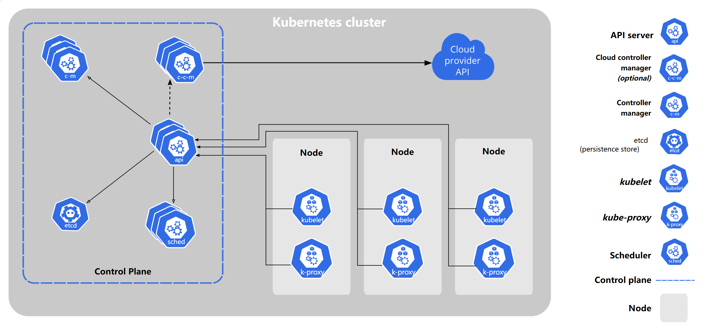
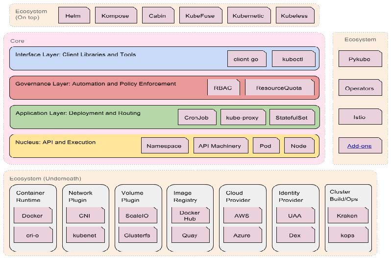
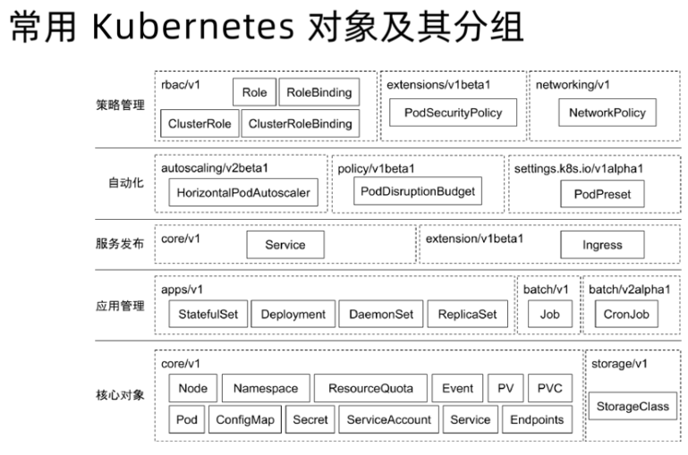
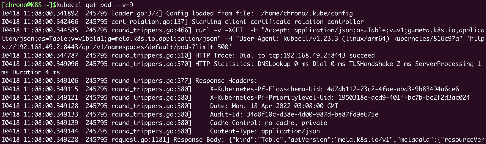

Kubernetes 基础介绍
云计算时代的操作系统
Kubernetes是 一个生产级别的容器编排平台和集群管理系统（谷歌开源），能够创建、调度容器，监控、管理服务器。
从某种角度来看，Kubernetes可以说是一个集群级别的操作系统，主要功能就是资源管理和作业调度。但Kubernetes不是运行在单机上管理单台计算资源和进程，而是运行在多台服务器上管理几百几千台的计算资源，以及在这些资源上运行的上万上百万的进程，规模要大得多。
命令式（Imperative）VS 声明式（Declarative）
-
命令式：我要你做什么，怎么做，请严格按照我说的做。
-
声明式：我需要你帮我做点事儿，但是我只告诉你我需要你做什么，不是你应该怎么做。（Kubernetes）
- 直接声明：我直接告诉你我需要什么。
- 间接声明：我不直接告诉你我的需求，我会把我的需求放在特定的地方，你自己去获取。
可以把Kubernetes与Linux对比起来学习，而这个新的操作系统里自然会有一系列新名词、新术语，你也需要使用新的思维方式来考虑问题，必要的时候还得和过去的习惯“说再见”。
Kubernetes这个操作系统与Linux还有一点区别你值得注意。Linux的用户通常是两类人： Dev 和 Ops，而在Kubernetes里则只有一类人： DevOps。
在以前的应用实施流程中，开发人员和运维人员分工明确，开发完成后需要编写详细的说明文档，然后交给运维去部署管理，两者之间不能随便“越线”。
而在Kubernetes这里，开发和运维的界限变得不那么清晰了。由于云原生的兴起，开发人员从一开始就必须考虑后续的部署运维工作，而运维人员也需要在早期介入开发，才能做好应用的运维监控工作。
Kubernetes 的基本架构
K8s 的官网：https://kubernetes.io/

Kubernetes采用了现今流行的“ 控制面/数据面”（Control Plane / Data Plane）架构，集群里的计算机被称为“ 节点”（Node），可以是实机也可以是虚机，少量的节点用作控制面来执行集群的管理维护工作，其他的大部分节点都被划归数据面，用来跑业务应用。
分层架构

了解 kubectl
- Kubectl 是一个 Kubernetes的命令行工具，它允许Kuberenetes用户以命令行的方式与 Kubernetes 交互，其默认读取配置文件 ~/.kube/config。
- Kubectl 会将接收到的用户请求转化为 rest 调用以 rest client 的形式与 APIServer通讯。
- APIServer 的地址，用户信息等配置在kubeconfig。
Kubectl -n kube-system get pod -v 9
kubectl config
Kubectl 常用命令
kubectl get pod -oyaml -w
kubectl get pod --show-labels
kubectl describe 展示资源的详细信息和相关Event。
kubectl exec 进入运行容器。
kubctl logs 查看Pod的标准输入(stdout,stderr)，与tail用法相似
Kubernetes 核心对象概览
一个kubernetes集群主要是由控制节点(master)、**工作节点(Worker)**构成，每个节点上都会安装不同的组件。
-
master：集群的控制平面，负责集群的决策 ( 管理 )
-
API Server : 资源操作的唯一入口，接收用户输入的命令，提供集群管理的REST API接口，包括：认证Authentication、授权Authorization、准入Admission（Mutating & Valiating）等机制。（接收外部请求，转换成 REST 调用发送到APIServer）会暴露一个 RESTful 的Kubernetes API并使用 JSON 格式的清单文件。
-
Scheduler : 负责集群资源调度，按照预定的调度策略将Pod调度到相应的node节点上。因为节点状态和Pod信息都存储在etcd里，所以scheduler必须通过apiserver才能获得。
-
Controller Manager : 负责维护容器和节点等资源的状态，实现故障检测、服务迁移、应用伸缩等功能。
- 是确保Kubernetes遵循声明式系统规范，确保系统的真实状态（Actual State）与用户定义的期望状态（Desired State）一致。
- 同样地，它也必须通过apiserver获得存储在etcd里的信息，才能够实现对资源的各种操作。
- Controller Manager 是多个控制器的组合，每个 Controller 事实上都是一个 control loop，负责侦听其管控对象，当对象发生变更时完成配置。
- Controller 配置失败通常会触发自动重试，整个集群会在控制器不断重试的机制下确保最终一致性（Eventual Consistency）。
- Control Manager
-
etcd ：高可用的分布式 Key-Value 数据库，用来持久化存储系统里的各种资源对象和状态，它只与APIServer 有直接联系，也就是说任何其他组件想要读写etcd里的数据都必须经过 APIServer。（Watch 模式）
-
这4个组件也都被容器化了，运行在集群的Pod里，我们可以用kubectl来查看它们的状态，使用命令：
kubectl get pod -n kube-system
-
-
Worker：集群的数据平面，负责为容器提供运行环境 ( 干活 )
-
Kubelet : 负责维护容器的生命周期，即通过控制容器运行时，来创建、更新、销毁容器
-
KubeProxy : 监控集群中用户发布的服务，并完成负载均衡配置。每个节点的Kube-Proxy都会配置相同的负载均衡策略，使得整个集群的服务发现建立在分布式负载均衡器之上，服务调用无需经过额外的网络跳转（Network Hop）
-
**Container-runtime：**容器运行时，即容器引擎，例如docker、containerd、podman。是容器和镜像的实际使用者，在 kubelet 的指挥下创建容器，管理Pod的生命周期。
- 这3个组件中只有kube-proxy被容器化了，而kubelet因为必须要管理整个节点，容器化会限制它的能力，所以它必须在container-runtime之外运行。
-
推荐的 Add-ons
- kube-dns：负责为整个集群提供 DNS 服务
- Ingress Controller：为服务提供外网入口
- MetricServer：提供资源监控
- Dashboard：提供GUI
- Fluentd-Elasticsearch：提供集群日志采集、存储与查询。
API 设计原则
-
所有 API 都应是声明式的
-
API 对象是彼此互补而且可组合的，高内聚松耦合。
-
高层 API 以操作意图为基础设计。
-
底层 API 根据高层 API 的控制需要设计。
-
尽量避免简单封装，不要有在外部 API 无法显式知道的内部隐藏的机制。
- 例如 Statefulset 和 Deployment，本来就是两种 Pod 集合，那么 Kuberentes 就用不同 API 对象来定义它们，而不会说只用同一个 Replicaset，内部通过特殊的算法再来区分这个 Replicaset 是有状态的还是无状态的。
-
API 操作复杂度与对象数量成正比。API的操作复杂度不能超过O（N）
-
API 对象状态不能依赖于网络连接状态。
-
尽量避免让操作机制依赖于全局状态。
核心技术概览和 API 对象
-
API 对象是 Kubernets 集群中的管理操作单元。
-
Kuberentes 集群系统每支持一项新功能，引入一项新技术，一定会新引入对应的 API 对象，支持对该功能的管理操作。
-
每个 API 对象都有四大类属性：
- TypeMeta
- Metadata
- Spec
- Status
TypeMeta
Kubernetes 对象的最基本定义，它通过引入 GKV（Group、Kind、Version）模型定义了一个对象的类型。
Group
Kubenetes 定义了非常多的对象，如何将这些对象进行归类是一门学问，将对象依据其功能范围归入不同的分组，比如把支撑最基本功能的对象归入 core 组，把与应用部署有关的对象归入 named 组，会使这些对象的可维护性和可理解性更高。
Kind
定义一个对象的基本类型，比如 Node、Pod、Deployment 等。
Version
社区每个季度会推出一个 Kubernetes 版本，随着 Kubernetes 版本的演进，对象从创建之初到能够完全生产化就绪的版本是不断变化的。与软件版本类似，通常社区提出一个模型定义以后，随着该对象的不断成熟，其版本可能会从 v1alpha1 到 v1aplpha2，或者到 v1beta1，最终变成生产就绪版本 v1。
Metadata
Metadata 中有两个最重要的属性：Namespace 和 Name，分别定义了对象的 Namespace 归属及名字，这两个属性唯一定义了某个对象实例
Label
Lable 是识别 Kuberentes 对象的标签，一个对象可能有任意对标签，其存在形式是键值对。Label 定义了对象的可识别属性，Kubernetes API 支持以 Label 作为过滤条件查询对象。
key 最长不能超过 63 字节，value 可以为空，也可以是不超过 253 字节的字符串。
Label 不提供唯一性，并且实际上经常是很多对象（如 Pods）都使用相同的 label 来标志具体的应用。
Label 定义好后其他对象可以使用 Label Selector 来选择一组相同 label 的对象。
Label Selector 支持以下几种方式：
等式，如 app = nginx 和 env != production;
集合，如 env in(production, qa);
多个 label （它们之间是 AND 关系），如 app=nginx，env=test
使用 kubectl get pod 的时候，通过 -l xx=xx 过滤更好，直接在 apiserver 层面过滤
Annotations
Annotations 和 Label 一样用键值对来定义，但Annotations是作为属性扩展，更多面向于系统管理员和开发人员，因此需要像其他属性一样做合理归类。
比如 deployment 使用 Annotations 来记录 rolling update 的状态。
Finalizer
Finalizer本质上是一个资源锁，Kubernetes 在接收某对象的删除请求时，会检查 Finalizer 是否为空，如果不为空则只对其做逻辑删除，即只会更新对象中的 metadata.deletionTimestamp 字段。
ResourceVersion
ResourceVersion 可以被看作一种乐观锁，每个对象在任意时刻都有其 ResourceVersion，当 Kubernetes 对象被客户端读取以后，ResourceVersion 信息也被一并读取。此机制确保了分布式系统中任意多线程能够无锁并发访问对象，极大提升了系统的整体效率。
Spec 和 Status
- spec 和 status 才是对象的核心。
- spec 是用户的期望状态，由创建对象的用户端来定义。
- Status 是对象的实际状态，由对应的控制器收集实际状态并更新。
- 与 TypeMeta 和 Metadata 等通用属性不同，Spec和 Status 是每个对象独有的。
常用 Kubernetes 对象及其分组

应用在 K8s 的部署流程
- 将应用程序清单提交给Kubernetes API，API Server将清单中定义的对象写入etcd
- 控制器（Controller）通过etcd注意到新创建的对象并创建多个新对象-每个对象对应一个应用程序实例
- 调度器（Scheduler）为每个实例分配一个节点
- Kubelet 注意到一个实例被分配给了 Kubelet 的节点。它通过容器运行时（Container Runtime）运行应用程序实例
- Kube proxy注意到应用程序实例已准备好接受来自客户端的连接并为他们配置网络，负载均衡等
- Kubelet 和 Controller 监控系统并保持应用程序运行
Kubernetes 的资源类型
YAML语言只相当于“语法”，要与Kubernetes对话，我们还必须有足够的“词汇”来表示“语义”。
作为一个集群操作系统，Kubernetes归纳总结了Google多年的经验，在理论层面抽象出了很多个概念，用来描述系统的管理运维工作，这些概念就叫做“ **API对象**”。
因为apiserver是Kubernetes系统的唯一入口，外部用户和内部组件都必须和它通信，而它采用了HTTP协议的URL资源理念，API风格也用RESTful的GET/POST/DELETE等等，所以，这些概念很自然地就被称为是“API对象”了。
可以使用 kubectl api-resources 来查看当前Kubernetes版本支持的所有对象：
root@master:~# kubectl api-resources
NAME SHORTNAMES APIVERSION NAMESPACED KIND
bindings v1 true Binding
componentstatuses cs v1 false ComponentStatus
configmaps cm v1 true ConfigMap
endpoints ep v1 true Endpoints
events ev v1 true Event
limitranges limits v1 true LimitRange
namespaces ns v1 false Namespace
nodes no v1 false Node
persistentvolumeclaims pvc v1 true PersistentVolumeClaim
persistentvolumes pv v1 false PersistentVolume
pods po v1 true Pod
podtemplates v1 true PodTemplate
replicationcontrollers rc v1 true ReplicationController
resourcequotas quota v1 true ResourceQuota
secrets v1 true Secret
serviceaccounts sa v1 true ServiceAccount
services svc v1 true Service
mutatingwebhookconfigurations admissionregistration.k8s.io/v1 false MutatingWebhookConfiguration
validatingwebhookconfigurations admissionregistration.k8s.io/v1 false ValidatingWebhookConfiguration
customresourcedefinitions crd,crds apiextensions.k8s.io/v1 false CustomResourceDefinition
apiservices apiregistration.k8s.io/v1 false APIService
controllerrevisions apps/v1 true ControllerRevision
daemonsets ds apps/v1 true DaemonSet
deployments deploy apps/v1 true Deployment
replicasets rs apps/v1 true ReplicaSet
statefulsets sts apps/v1 true StatefulSet
tokenreviews authentication.k8s.io/v1 false TokenReview
localsubjectaccessreviews authorization.k8s.io/v1 true LocalSubjectAccessReview
selfsubjectaccessreviews authorization.k8s.io/v1 false SelfSubjectAccessReview
selfsubjectrulesreviews authorization.k8s.io/v1 false SelfSubjectRulesReview
subjectaccessreviews authorization.k8s.io/v1 false SubjectAccessReview
horizontalpodautoscalers hpa autoscaling/v2 true HorizontalPodAutoscaler
cronjobs cj batch/v1 true CronJob
jobs batch/v1 true Job
certificatesigningrequests csr certificates.k8s.io/v1 false CertificateSigningRequest
leases coordination.k8s.io/v1 true Lease
bgpconfigurations crd.projectcalico.org/v1 false BGPConfiguration
bgppeers crd.projectcalico.org/v1 false BGPPeer
blockaffinities crd.projectcalico.org/v1 false BlockAffinity
caliconodestatuses crd.projectcalico.org/v1 false CalicoNodeStatus
clusterinformations crd.projectcalico.org/v1 false ClusterInformation
felixconfigurations crd.projectcalico.org/v1 false FelixConfiguration
globalnetworkpolicies crd.projectcalico.org/v1 false GlobalNetworkPolicy
globalnetworksets crd.projectcalico.org/v1 false GlobalNetworkSet
hostendpoints crd.projectcalico.org/v1 false HostEndpoint
ipamblocks crd.projectcalico.org/v1 false IPAMBlock
ipamconfigs crd.projectcalico.org/v1 false IPAMConfig
ipamhandles crd.projectcalico.org/v1 false IPAMHandle
ippools crd.projectcalico.org/v1 false IPPool
ipreservations crd.projectcalico.org/v1 false IPReservation
kubecontrollersconfigurations crd.projectcalico.org/v1 false KubeControllersConfiguration
networkpolicies crd.projectcalico.org/v1 true NetworkPolicy
networksets crd.projectcalico.org/v1 true NetworkSet
endpointslices discovery.k8s.io/v1 true EndpointSlice
events ev events.k8s.io/v1 true Event
flowschemas flowcontrol.apiserver.k8s.io/v1beta2 false FlowSchema
prioritylevelconfigurations flowcontrol.apiserver.k8s.io/v1beta2 false PriorityLevelConfiguration
ingressclasses networking.k8s.io/v1 false IngressClass
ingresses ing networking.k8s.io/v1 true Ingress
networkpolicies netpol networking.k8s.io/v1 true NetworkPolicy
runtimeclasses node.k8s.io/v1 false RuntimeClass
apiservers operator.tigera.io/v1 false APIServer
imagesets operator.tigera.io/v1 false ImageSet
installations operator.tigera.io/v1 false Installation
tigerastatuses operator.tigera.io/v1 false TigeraStatus
poddisruptionbudgets pdb policy/v1 true PodDisruptionBudget
clusterrolebindings rbac.authorization.k8s.io/v1 false ClusterRoleBinding
clusterroles rbac.authorization.k8s.io/v1 false ClusterRole
rolebindings rbac.authorization.k8s.io/v1 true RoleBinding
roles rbac.authorization.k8s.io/v1 true Role
priorityclasses pc scheduling.k8s.io/v1 false PriorityClass
csidrivers storage.k8s.io/v1 false CSIDriver
csinodes storage.k8s.io/v1 false CSINode
csistoragecapacities storage.k8s.io/v1 true CSIStorageCapacity
storageclasses sc storage.k8s.io/v1 false StorageClass
volumeattachments storage.k8s.io/v1 false VolumeAttachment
error: unable to retrieve the complete list of server APIs: projectcalico.org/v3: the server is currently unable to handle the request
root@master:~#
在输出的“NAME”一栏，就是对象的名字，比如ConfigMap、Pod、Service等等，第二栏“SHORTNAMES”则是这种资源的简写，在我们使用kubectl命令的时候很有用，可以少敲几次键盘，比如Pod可以简写成po，Service可以简写成svc。
在使用kubectl命令的时候，你还可以加上一个参数 --v=9，它会显示出详细的命令执行过程，清楚地看到发出的HTTP请求，比如：
kubectl get pod --v=9

从截图里可以看到，kubectl客户端等价于调用了curl，向8443端口发送了HTTP GET 请求，URL是 /api/v1/namespaces/default/pods。
Kubernetes API version
查看可用的 API Version 命令：
$ kubectl api-versions
acme.cert-manager.io/v1
admissionregistration.k8s.io/v1
admissionregistration.k8s.io/v1alpha1
admissionregistration.k8s.io/v1beta1
...
k8s 官方将 api version 分成了三个大类型，alpha、beta、stable：
- Alpha：未经充分测试，可能存在 bug，功能可能随时调整或删除；
- Beta：经过充分测试，功能细节可能会在未来进行修改；
- Stable：稳定版本，将会得到持续支持。